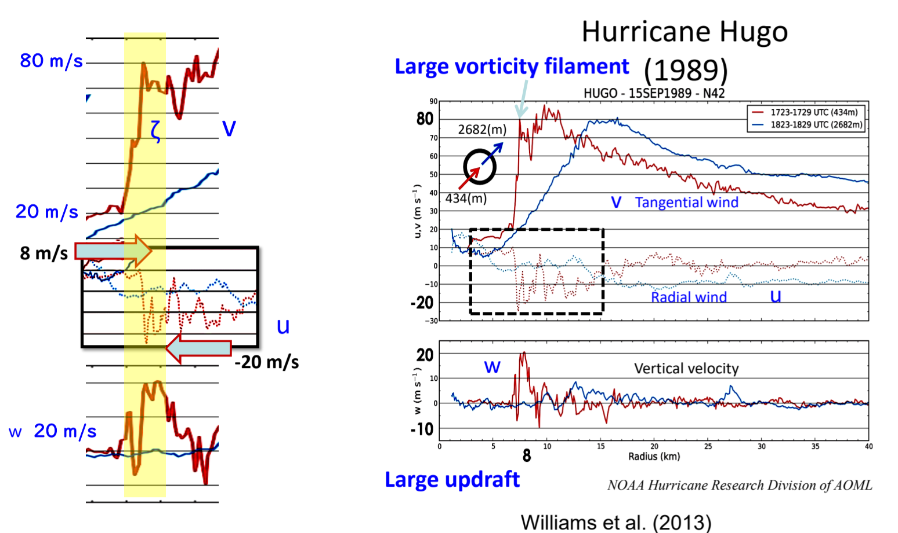
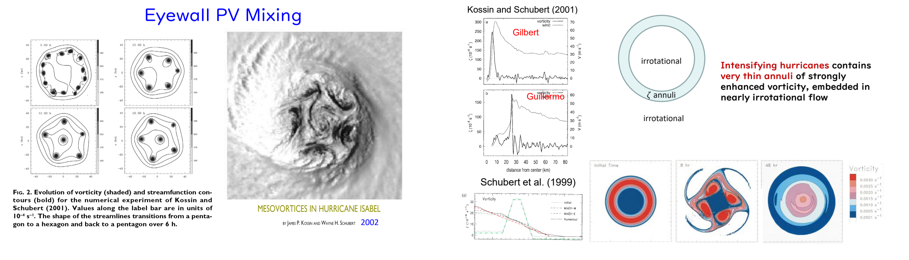
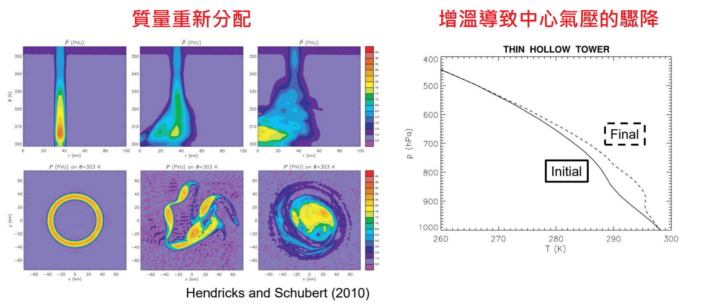
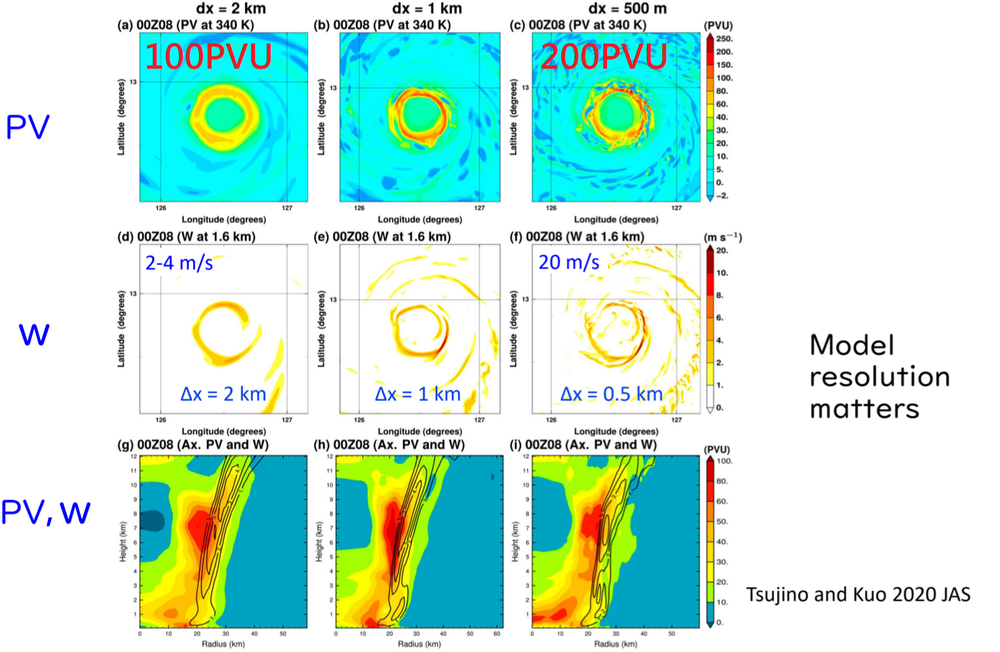

Typhoon Dynamics Hw 3#
name:葉品辰
ID:r14229017
date: 2026.04.29
一、 能量的來源 與 非線性的邊界層震波#
Ooyama 早在 1969 年的研究就確立了 沒有海洋提供直接的能量供應，颱風的動力結構就會崩潰 ，海洋、邊界層的摩擦內流構成了颱風主環流（旋轉）與次環流（輻合上升）。但當颱風變得極度強烈時，邊界層的徑向內流（\(u\)）會出現高度非線性的行為，我們可以透過無黏性的 Burgers 方程式來理解這個過程：
物理概念#
這是一個描述非線性平流的經典方程式
假設一開始
外圍的氣流向內流動的速度比內側的氣流還要快
隨著時間，外圍的高速氣流會不斷追上內部的氣流，在數學上，這會導致流速的空間梯度\(\frac{\partial u}{\partial r}\)隨時間迅速增大，並在有限的時間內趨近於無限大（\(-\infty\)）
在颱風中，這個流體力學的「壅塞」就是非線性震波（Shock formation，1989 年颶風 Hugo 的觀測完美印證了這一點：在半徑 8 公里處，徑向風速發生了極端的不連續，並伴隨著高達 \(20 \text{m}\text{s}^{-1}\) 的劇烈上升氣流（\(w\)），這種極端輻合，是將動量與水氣向上傳輸進入對流塔的關鍵。

二、 打破對稱：正壓不穩定 與 多邊形眼牆#
當邊界層的震波將氣流向上猛烈推進時，會在眼牆內緣形成極端強烈的 對流位渦塔（Convective PV Tower），其 PV（位渦）值甚至可以高達 200 到 250 PVU。此時，颱風眼牆的渦度分布會呈現一個極端的狀態：一個極薄且強烈的渦度環（annuli），被包圍在幾乎無旋轉（irrotational）的流場中
流體力學告訴我們，這種薄而強烈的渦度環是 正壓不穩定（barotropic unstable）
【演化過程】
多邊形眼牆： 這個高渦度的圓環無法維持對稱，會開始扭曲，破裂成多個中尺度渦旋（mesovortices）。在雷達或衛星雲圖上，這會讓眼牆呈現出五角形或六角形等多邊形結構（例如 Kossin and Schubert 在 2001 年模擬的五角形演化）
Noodling 與 Filamentation： 這些分裂的小渦旋會進一步被流場拉扯成細長的絲狀結構（Filamentation），並像麵條一樣（Noodling）向颱風中心捲入混合
比喻： 想像我們在旋轉的咖啡杯中心外圍輕輕倒上一圈濃郁的奶精，一開始它是一個完美的圓環但隨著流體的不穩定這圈鮮奶油會開始扭曲、分裂成好幾個小團塊，最後被拉扯成絲狀，均勻地混合到咖啡中心。這就是 PV Mixing 的視覺化過程
在觀測上，颶風 Isabel (2003) 清楚地展現了這種現象，其眼內出現了由 PV 混合形成的「樞紐雲（Hub cloud）」與「護城河（Moat）」結構

三、 快速增強（RI）的啟動鑰匙：位渦混合的動力下沉#
為什麼 PV 混合（PV Mixing）如此重要？因為它是觸發颱風快速增強（Rapid Intensification, RI）的關鍵機制之一
傳統觀念認為，颱風增強單純是因為對流潛熱釋放，但這無法解釋為何有些颱風環境條件良好卻無法 RI，因為我們要考慮：
質量重分配與下沉氣流： 當高 PV 的空氣塊從眼牆被混合進入颱風眼中心時，這種不對稱的流動會迫使質量重新分配，並在眼區誘發動力下沉氣流（Subsidence）
動力增溫： 下沉氣流會絕熱壓縮空氣，導致眼區出現強烈的動力增溫（Dynamical warming），這反映在觀測到的低層動力沉降逆溫現象中
氣壓驟降： 根據靜力平衡，整層大氣溫度的急遽升高會導致表面氣壓劇烈下降。研究指出，RI 初期的 PV 混合的動力效應貢獻了中心氣壓下降量的約 50%

四、 動態效率（DEF）：潛熱轉換為動能#
如果潛熱是燃料、颱風是引擎，那麼 動態效率（Dynamic Efficiency Factor, DEF） 就是測量這具引擎燃燒效率的指標，大尺度條件相同的颱風，如果內部結構不同，其釋放潛熱轉換為破壞性風力（動能）的效率會天差地遠。
【物理解釋】 在平衡渦旋模型中，我們關心的是總動能 \(K\) 隨時間的變化率：
\(\tilde{C}\) 是動能轉換率 \(\tilde{C} \overset{\text{def}}{=} \iint \rho \frac{T}{T_0} g w r \, dr\, dz\)
\(\tilde{D}\) 是摩擦耗散
物理上非常直觀：只有在溫度較高的地方（暖區、\(T\) 大）發生強烈的上升運動（\(w\) 大），系統的熱能才能有效轉換為動能
透過代入連續方程式與次環流方程式，我們可以將 \(\tilde{C}\) 重新寫為潛熱釋放 \(Q\) 與動態效率 \(\eta_h\) 的乘積，之後證明：
系統的總動態效率（System DEF）取決於潛熱 \(Q\) 是否釋放在 \(\eta_h\) 數值很大的區域
\(\eta_h\) 的大小與大氣的 慣性穩定度（Inertial stability） 和 位渦（PV） 成正比
當對流剛好發生在由非線性震波產生的高 PV 塔（200 PVU）中時，加熱效率會達到極大值，主環流得以指數型暴增，這正是 RI 的微觀本質
比喻： 想像我們有兩台車，一台是普通的引擎，另一台配有高壓渦輪增壓器（對應高 PV、高慣性穩定度的眼牆區域）。即使我們給予完全相同的燃油（潛熱釋放 \(Q\)），高壓渦輪引擎能因為內部的高壓約束，將熱能極高效率地轉換為強大的動能。
五、 數值模擬：高解析的必要性#
理解了上述複雜的非線性與中尺度動力後，我們就能明白 模式解析度 至關重要
如果我們使用傳統的 2 公里（\(\Delta x = 2\text{ km}\)）網格來跑模式，我們只能看到模糊的降水和寬廣的眼牆，在這種粗糙的解析度下系統無法捕捉到極窄的邊界層內流震波也無法精確解析出超過 100 PVU 的極端位渦塔
只有當我們將解析度提升至 500 公尺（\(\Delta x = 0.5\text{ km}\)）甚至更高時，模式才能真實反映出大自然中 \(w\) 與 \(\zeta\) 緊密耦合的現象，並正確計算出位渦混合與隨之而來的動態效率提升。

六、 總結#
颱風是一個巨觀的天氣系統，它吸收了熱帶海洋的龐大能量、內部演化出了一套極度精妙的結構，透過非線性震波將動量集中、形成高位渦對流塔、再藉由位渦混合引發眼內絕熱下沉增溫，大幅降低中心氣壓，在極高慣性穩定度的區域內釋放潛熱，將動態轉換效率逼至極限。
科學上的突破往往依賴於 觀測技術 與 運算能力 的提升，現在AI的能力也在上升，學會AI並應用才能夠更好的發展科學